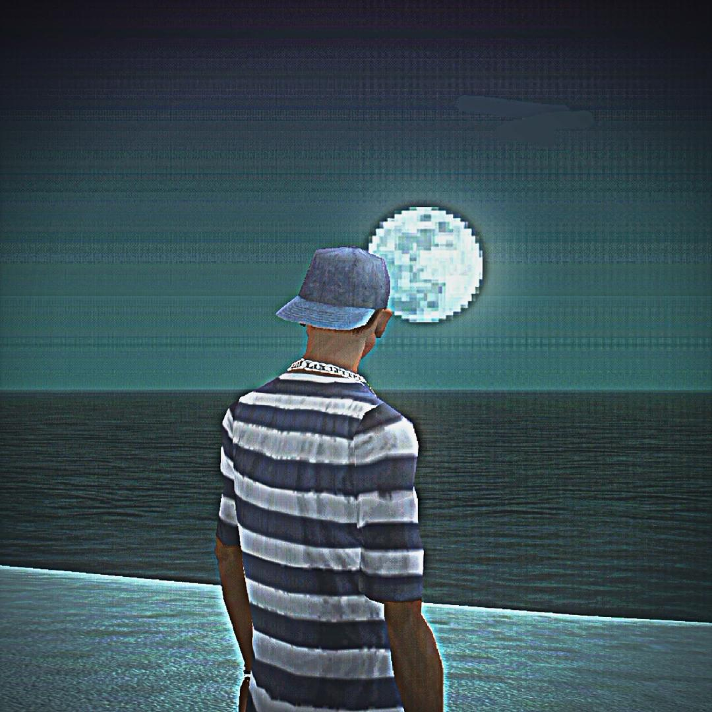

Website Pertama
Websye
Website pertama saya di dunia ini. Keluar dari zona nyaman dan mulai buat karya sendiri.

YethrqPortfolio
Ini adalah website pertama saya di dunia ini. Lihat dan rasakan sendiri.
Dari sini saya terus belajar dan membuat karya yang lebih baik. Lihat halaman lain untuk menemukan hal yang menarik.